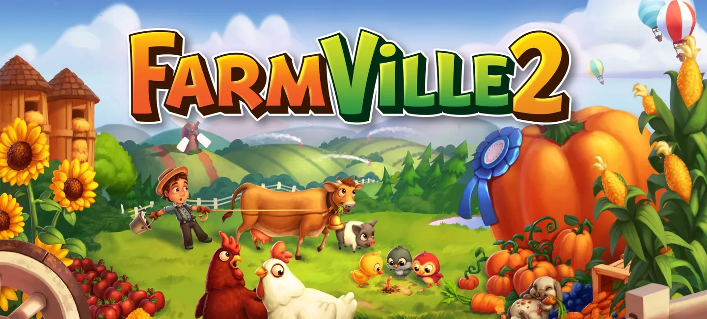
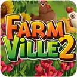

FarmVille 2
Part of the core team that moved FarmVille 2 from San Francisco to India.
- Role
- Game Features and Content Producer
- Genre
- Simulation and Role Playing
- Platform


Results
- All-time high of 40M monthly active users
- Grew daily active users by 300,000 through content and optimisation
- Introduced the first rooster in FarmVille's history: the Amazing Rooster, leader of the farm animals
- Zynga Green Beret Award for that growth, February 2016
- Zynga Samurai Award for transitioning FarmVille 2 to India, December 2015
The work
Joined the core team that transitioned FarmVille 2 from Zynga's San Francisco studio to India.
Ran the content team and defined a five-year product vision for the game.
The first rooster in FarmVille
Every FarmVille farm had its hens, its cows and its sheep. In all the years of the game, not one had ever had a rooster.
I introduced the first: the Amazing Rooster. He wasn't one more animal for the pen. He was the leader of the farm animals, and he earned the title the way a good leader does, by looking after everyone else.
A farm's day is full of small chores. Trees and groves wait to be watered, and chickens wait to be fed. The rooster takes on both.
His life on the farm
- 01Raised from a chickHe starts small. Players raise a rooster chick in the Rooster Coop until he's ready to take charge.
- 02Keeper of the orchardHis first job is the trees. He waters your trees and groves, for a set number of uses.
- 03Leader of the flockWhen his watering uses run out, he takes up a daily duty. One click, and he feeds every adult chicken on your main farm, once every 24 hours. Chickens kept in the Animal Barn wait their turn.
The launch
Zynga announced him with a trailer, "Get the Amazing Rooster!" Before long, players were filming their own hunts for Rooster Eggs.
 Play video: Get the Amazing Rooster! (FarmVille 2)
Play video: Get the Amazing Rooster! (FarmVille 2)
 Play video: FarmVille 2 ep. 128: The hunt for Rooster Eggs
Play video: FarmVille 2 ep. 128: The hunt for Rooster Eggs